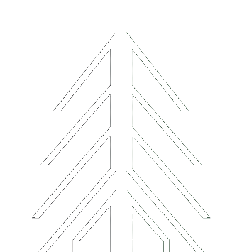

01Sezon
Menu zmienia się wraz z rytmem lasu, temperaturą i dostępnością składników.
 Stolik
Stolik


Kameralna restauracja ukryta w lesie — nowoczesna kuchnia, przygaszone światło, sezonowe składniki i widok, który zostaje po wyjściu.
Goście trafiają tu ścieżką prowadzoną przez las, a światło budynku pojawia się dopiero między drzewami. Wnętrze łączy ciemny kamień, drewno, zielone tkaniny i ciepły blask stołów.

01Menu zmienia się wraz z rytmem lasu, temperaturą i dostępnością składników.
Wędzenie, pieczenie i sosy budowane na głębokim, ciemnym smaku.
Mało stolików, dużo przestrzeni i kolacja bez pośpiechu.

Czarny Świerk nie próbuje odcinać się od otoczenia. Szklane ściany, czarna elewacja i światło świec sprawiają, że sala restauracyjna wygląda jak część krajobrazu.

Przewijanie odkrywa wnętrze, bar, las i drogę do restauracji.


Zapach mokrego mchu, ciepło lamp przy ścieżce i cisza lasu są częścią doświadczenia.
Rezerwacje przyjmowane są na kolacje od czwartku do niedzieli. Najlepsze miejsca przy oknach znikają najszybciej.
restauracja w lesie
ul. Leśna 21 / rezerwacje@czarnyswierk.pl / +48 500 210 210